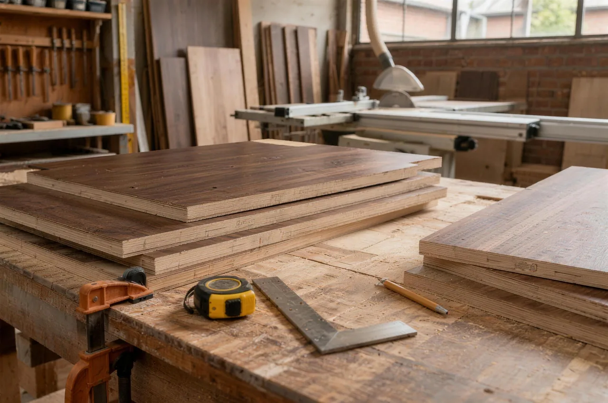
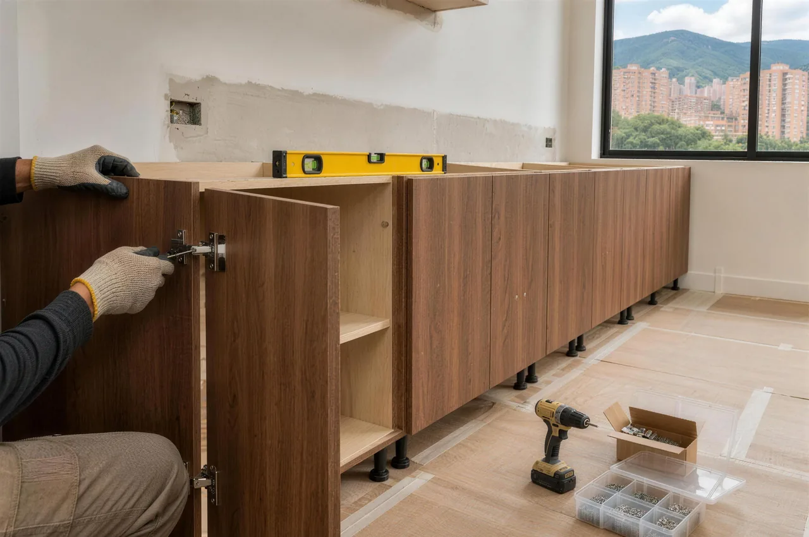

Nosotros
Carpintería hecha con plano y con paciencia.
Andok Group hace carpintería y acabados para apartamentos en Bogotá desde hace más de 3 años, con obras en conjuntos de toda la ciudad.

Cómo pensamos
Tres cosas que no cambian en ninguna obra.
Medir dos veces
Cada mueble sale de un plano con las medidas reales del apartamento. Así encaja a la primera.
Pocos materiales
Trabajamos maderas y piedras que conocemos bien y que envejecen bien.
Obra cuidada
Protegemos pisos y zonas comunes, respetamos los horarios del conjunto y entregamos limpio.
Cómo trabajamos
Cinco pasos, de tu mensaje a la entrega.
El plazo y el valor quedan por escrito antes de empezar.
- 1
Escríbenos
Por WhatsApp nos cuentas qué quieres hacer y en qué barrio.
- 2
Visita y medidas gratis
Vamos al apartamento sin costo, medimos y vemos el espacio contigo.
- 3
Plano y cotización
En máximo 7 días hábiles te enviamos el diseño, los materiales y el valor por escrito, válido por 14 días.
- 4
Fabricación
Cortamos y preparamos cada pieza según el plano aprobado.
- 5
Instalación y entrega
Instalamos, ajustamos y revisamos contigo antes de entregar.
Dónde trabajamos
Toda Bogotá, sobre todo el norte.
Vamos a tu apartamento a medir y a mostrarte las muestras. La mayoría de nuestras obras están en el norte de la ciudad.

Cotización por proyecto
Hablemos de tu apartamento.
Cuéntanos qué quieres hacer y en qué barrio queda el apartamento. Te respondemos por WhatsApp y agendamos la visita gratis para medir.
También por correo: andokcarpinteria@gmail.com